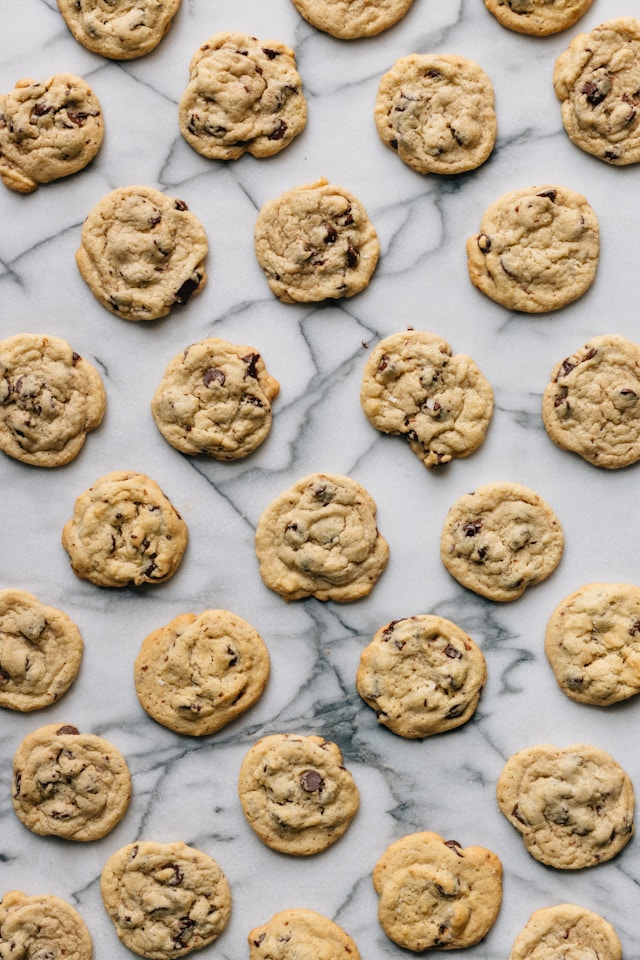

Chocolate Chip Cookies

A delicious chocolate chip cookie, cooked to perfection. Soft and gooey on the inside, and crispy on the outside.
Ingredients
- 1 1/3 cups all purpose flour
- 1/2 teaspoon baking soda
- 1/2 teaspoon baking powder
- 3/4 teaspoon kosher salt
- 1/2 cup unsalted butter. Melted and cooled.
- 1/2 cup light brown sugar
- 1/3 cup granulated sugar
- 2 teaspoons vanilla extract
- 1 large egg
- 1 1/2 cups semisweet chocolate chips
- add flaky sea salt
Directions
- Preheat the oven to 350° F
- Line 2 large baking sheets with parchment paper
- In a medium sized bowl, whisk together flour, baking soda, baking powder, and salt. Set aside.
- In a large mixing bowl, add melted and cooled butter, brown sugar, and sugar. Whisk vigorously for 1-2 minutes until it turns into a paste-like consistency.
- Whisk in the egg and vanilla until smooth.
- Pour in the dry ingredients and use a rubber spatula to fold to combine. Leave a few streaks of flour and pour in the chocolate chips. Continue to fold the dough until the chocolate chips are dispersed and the flour is completely blended in. Do not over mix.
- Scoop 6 cookies onto each baking sheet and bake for 10-12 minutes.
- The cookies are ready when they have a golden ring around the edge but are pale and puffed in the center.
- When they’re fresh from the oven, top with a few extra chocolate chips and sprinkle with sea salt.
- Transfer to a cooling rack and continue to bake the rest of the dough.
- Let the cookies cool for about 20 minutes before eating. They’re best when they’re slightly warm and the chocolate chips are still melty.